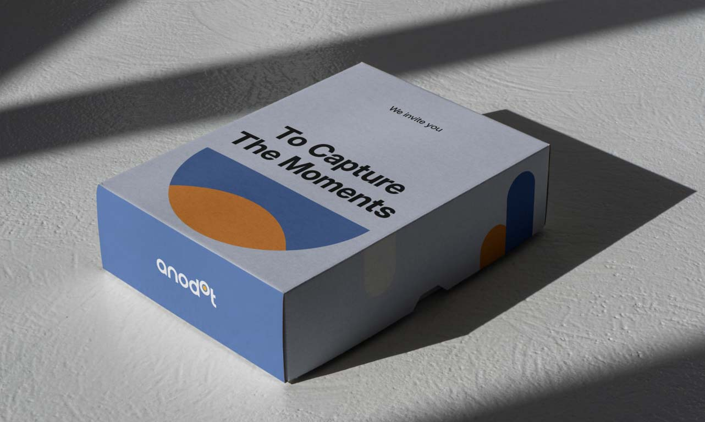
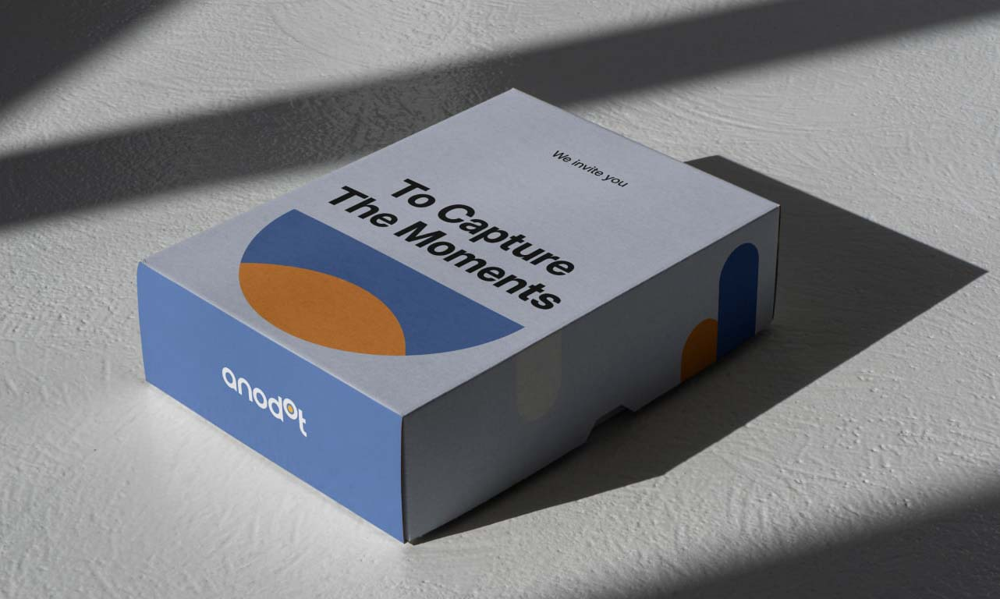

Anodot:
Monitoring that understand business
Anodot is a real-time analytics company that uses AI and machine learning to monitor a wide range of business metrics, such as website traffic and sales data. It alerts users to anomalies in their data streams, allowing them to identify and address issues before they become major problems. They develop intelligent and reliable solutions that accelerate businesses’ efficiency and decision-making and ultimately creating real, lasting, long-term transformation for their clients.
Scope
Rebranding
Concept Development
Visual identity
Design system

Kick Off
Anodot approached us to update their brand and create an evolution that reflected the simplicity of their solutions and the clarity they provide for their clients.
We partnered with them to build on their established brand and create an elevated update to their core identity.
We partnered with them to build on their established brand and create an elevated update to their core identity.
Challenge
One of our key challenges was finding a way to make Anodot's complex AI technology more accessible and understandable to their audience. The main issue was that businesses are missing out on a significant amount of valuable data. To solve this, we had to demystify technical jargon and present the information in a clear and engaging way.
Approach
We utilized basic geometric shapes in our branding process to illustrate a complicated concept, which proved to be highly effective in simplifying and clarifying our message. These shapes were then expanded into a set of distinct icons, each representing one of Anodot's product solutions and the various industries it serves.
Approach
We utilized basic geometric shapes in our branding process to illustrate a complicated concept, which proved to be highly effective in simplifying and clarifying our message. These shapes were then expanded into a set of distinct icons, each representing one of Anodot's product solutions and the various industries it serves.
“This is way bigger than design. This is about cracking an idea and understanding how to translate our strategy to a compelling visual identity and attractive stories in a sharp yet straightforward way.”
Amit Levy
Chief Marketing Officer, Anodot
Chief Marketing Officer, Anodot

Solution
We simplified the design by removing unnecessary gradients and introduced simple shapes to represent the core concept. By breaking down the solution into four fundamental ideas (alert, anomaly, data, and learning), we were able to effectively communicate the main message of Anodot's solution.
 
